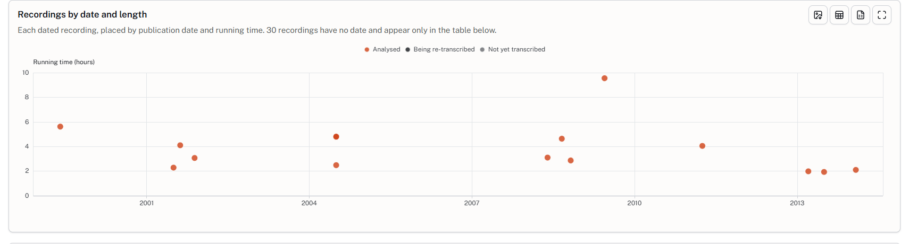
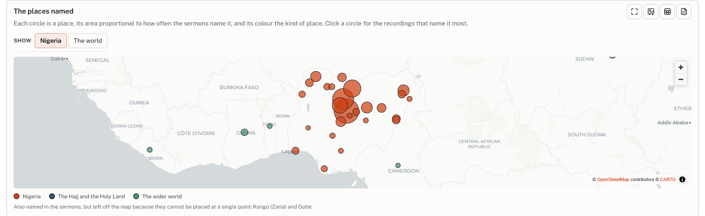
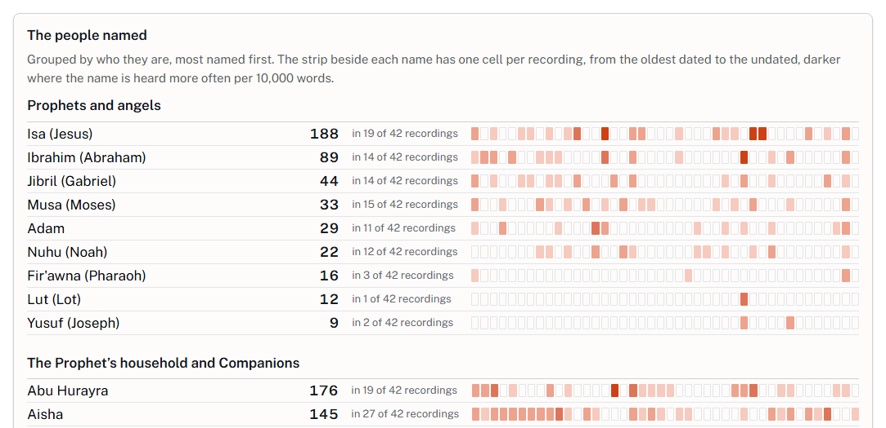
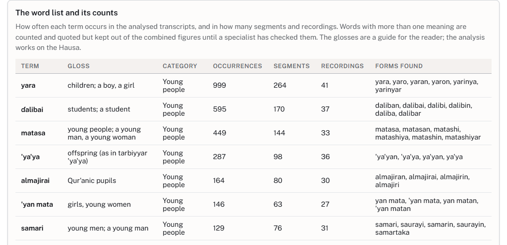
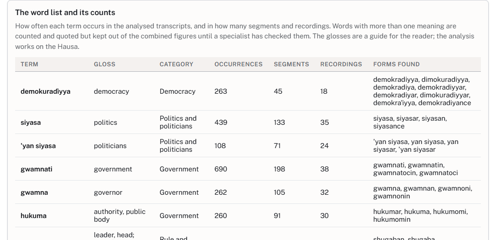
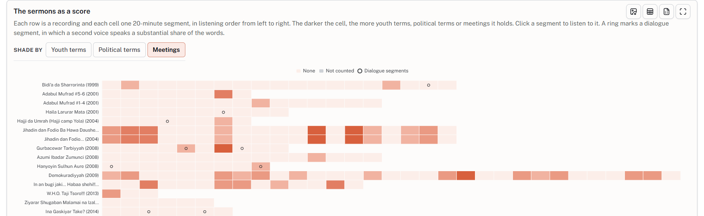

Digital Humanities and AI in the Social Sciences
Datafication in practice
Religion and Intellectual Culture Unit
12 November 2026
Overview
- Framing: two ZMO workshops and a position paper
- Global Heshmat: a sculptor's works on a map
- Datafication: where the work lies, and Kalamu, an app to speed it up
- Albani Zaria's sermons: from DVD to word counts, places and people
- The Global South and data: who digitises what, and who has access
- The dialectics of datafication: what helps, what damages, what endangers
- Questions for the discussion: method, ethics, epistemology
- Two more projects: ZMO Visualisations and Genocide at the Security Council
Framing
Where this comes from, and what datafication means
Two workshops
Both applications prepared at ZMO
- Convened with Vincent Hiribarren (King's College London)
- 26 researchers from 16 countries
- Working groups and World Café rounds instead of keynotes and panels

- Convened with Vincent Hiribarren, Emmanuel Ngue Um and Menno van Zaanen
- 25 papers, 33 participants from 17 countries
- Hybrid, in English and French

What came out of it
Position paper: “For Whom and For What Purpose?” (ZMO Programmatic Texts, 2026)
- Situated practice: digitisation agreements as living documents, ontologies open to revision
- Sovereignty: design grounded in access and governance; ethics revisited throughout a project
- Shared problems: consent, standardisation, ill-fitting metadata, hidden labour, language bias, maintenance, all more visible in African contexts
- Reading as data: 217 works annotated, mapped into 145 concepts and 1,219 links
A special issue in preparation
Journal of the Digital Humanities Association of Southern Africa (JDHASA)
Articles drawn from the Stellenbosch papers
Datafication
Rendering social life, objects and records into machine-readable data
- van Dijck 2014
- Datafication as a paradigm shift in knowledge production, and the belief in data it fosters
- Mejias & Couldry 2019
- The quantification of social life, whose appropriation they call data colonialism
- Drucker 2011
- Data are capta: taken, not given
- Gitelman (ed.) 2013
- “Raw data” is an oxymoron
Question for today: what is decided, and by whom, when a source becomes data?
One object, two forms
A memorial in Hasselt, Belgium, and its record in the Global Heshmat code

// artworks/018-Heilig Kruiskerk.ts
const artwork: Artwork = {
id: 18,
slug: "heilig-kruiskerk",
name: 'Heilig Kruiskerk',
lat: 50.92058026384286,
lng: 5.325863864013154,
country: 'Belgium',
city: 'Hasselt',
status: 'located',
trails: ['east-west', 'faith-remembrance'],
address: 'Kruisherenlaan 29, 3500 Hasselt',
desc: 'In memory of 23 Belgian missionaries murdered
in Buta (Congo) in 1965, Hassan Heshmat was …',
images: [{src: "Mahnmal_Hasselt_Kopie.jpg",
caption: "Mural next to the Heilig Kruiskerk"}, … 7 more],
links: [{label: 'KADOC',
url: 'https://kadocheritage.be/items/show/11473'}]
};Global Heshmat
Following Hassan Heshmat's works around the world
Global Heshmat
Egyptian sculptor Hassan Heshmat (1920–2006) · a project by Sonja Hegasy

46 entries, each with its own page: story, photographs, sources, a citable address
Missing works keep their entries, with a public call to report them.
What the mapping showed, and what it took
31 profiles from Sonja Hegasy's research, and the decisions behind the site

Each work and each person is a typed data file: adding one is a one-file edit
Located, to be found, relocated: a work's history becomes a field and a line on the map
Search ignores Arabic vowel marks and accents, but each name still takes one chosen spelling
Who maintains the record, and who in Egypt can correct it?
Datafication is where the work is
Most of the time goes into turning sources into data; analysis comes after
AI speeds up the first part by an order of magnitude
Manuscripts, typescripts and print, in several scripts
Interviews, lectures and sermons, with speakers told apart
People, places and organisations, ready to link
Its own problems: errors that read well, bias, cost, and extraction (whose data trains the models, and who profits?)
Kalamu
A desktop app I am developing: the same work, without writing code

- Read scanned and handwritten documents
- Transcribe interviews, in the cloud or offline
- Analyse texts with fields you define: people, places, themes
- Check every result against its source; corrections never overwrite the AI's text
- Export with a record of model, prompt and settings

github.com/
Free, open source
Windows and macOS
Albani Zaria's sermons
From DVD to word counts: Hausa sermons in the Islam West Africa Collection (IWAC)
Who was Albani Zaria?
Muhammad Auwal Adam Albani Zaria (1960–2014)
- Born
- Zaria, northern Nigeria, 27 September 1960
- Educated
- Barewa College, Zaria
- Role
- Salafi scholar and Qur'anic exegete; taught at Daarul Hadeethis Salafiyyah, Zaria
- Languages
- Taught in Hausa, quoting Arabic
- Died
- Assassinated in Zaria, 1 February 2014
The collection
45 recordings, c. 1999–2014 · 42 transcribed so far: 145 h, 1,089,269 words

Running time (hours) of the 15 dated recordings; the other 30 carry no date. Catalogued for IWAC by Vincent Favier and Aleksei Akseshin; 3 recordings not yet transcribed.
The pipeline
Five stages turn the recordings into figures and passages

Every step is a decision
A word list is a classification scheme
ɓ/b, ɗ/d, ƙ/k, ƴ/y, q/k, double letters and apostrophes count as one word
76 published Hausa stop words (Bashir, Bichi & Adamu 2024), plus this speaker's fillers ainihin, wato
sallallahu alaihi wa sallam, in sha Allah: counted as whole phrases, outside the word lists
addini, shari'a, ilimi: Arabic words that count as Hausa
sarki is not counted where it means God (1,184 of 2,094); ƙasa, “country” or “to fail”, stays out of totals
Voices are told apart only within each 20-minute segment; the 35 dialogue segments can be excluded
The places named
Each circle a place, its area proportional to how often the sermons name it

The people named
Seven groups of people, the most named first in each

- Al-Bukhari 502
- Usman dan Fodio 397
- Ja'afar Mahmud Adam 279
- Abubakar Gumi 252
- Isa (Jesus) 188
- Abu Hurayra 176
Al-Bukhari in 36 of 42 recordings; Usman dan Fodio in 25.
Youth: who is being talked about?
Occurrences of the youth word list across the 42 analysed transcripts

Yara (children) is the largest youth term: much of the theme concerns children and families.
Makaranta (school, education theme) occurs 996 times, in 40 of 42 recordings.
Almajirai, Qur'anic pupils: 164 times in 30 recordings.
Politics: the vocabulary of government
Occurrences of the political word list across the 42 analysed transcripts

sarki (emir, king): 2,094 occurrences, but 1,184 left out because they refer to God, as in Allah Maɗaukakin Sarki
Three in four uses of demokuraɗiyya (201 of 263) come from a single lecture, Demokuradiyyah (9 h 33).
Where youth meets politics
A meeting: a youth term and a political term within ten words, same speaker

Most frequent pairs: yara × sarki (13), yara × jihadi (12), 'ya'ya × sarki (11), almajirai × sarki (11)
89 segments contain at least one meeting; the exhibit ranks them and links each to its 20 minutes of audio.
The count points to the 20 minutes worth hearing; the analysis comes from listening to them.
The sermons as a score
Each row a recording, each cell a 20-minute segment: click one to listen to it

Read the passages
On the exhibit page, every count leads back to the words it comes from

Discussion
Methodological, ethical and epistemological stakes of AI and digital humanities tools
The Global South and data
Digitisation and AI can reproduce older asymmetries
Mostly Western-funded: “digital imperialism” (Breckenridge), a “digital saviour complex” (Shringarpure)
Selection deepens archival silences; keyword search sidelines what is not online
The digital divide: unequal internet access remains a major obstacle (Barringer & Wallace 2014)
Life turned into raw material for profit, as land once was (Couldry & Mejias 2019, 2024)
African texts, voices and annotation labour feed models whose value flows north
The reverse: African-language data never collected or kept (Adebara 2025)
One answer, in IWAC: FAIR and CARE principles; catalogue where custodians prefer; credit rights holders.
The dialectics of datafication
Which datafication helps, which damages, and which endangers?
Some projects try to make interlocutors impossible to datafy, so that they do not end up in prison: dispersing data points to prevent mapping.
Datafication varies by region (authoritarian or not), by discipline and within it, and by goal.
- For many historians, already working with texts, DH looks like a gift
- Some anthropologists push back: everyday experience is not simply data
- Fieldwork is already extraction; AI changes speed and scale
- What would consensual, qualitative practice look like?
Questions for the discussion
- 1Method
- Who checks the word lists, and in which language?
- 2Ethics
- Whose voice becomes data, and who decides?
- 3Epistemology
- Is a count evidence, or only a pointer?
Two more projects to explore
ZMO Visualisations
ZMO as data: 1,985 publications by 671 authors, 1994–2026

Genocide at the Security Council
How is the word used in 167,600 UN Security Council speeches, 1946–2024?